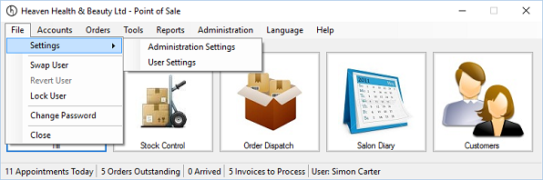

Settings are split into two parts, these are:
· Administration settings – settings which affect the entire POS.
· User settings – settings which affect the active user.

Both of these settings are accessible by selecting the File menu, selecting the Settings menu
and then the appropriate menu.
Standard Settings.
Standard settings are those that affect the POS, Plugin Modules may or may not have other
Administration or User settings, if so these will be discussed within the appropriate section
for that plugin module.
Settings are broken down into two sub sections, they are Administration settings, only
available to POS administrators and User settings which can be used by all system users.
Standard settings are those that affect the POS, Plugin Modules may or may not have other
Administration or User settings, if so these will be discussed within the appropriate section
for that plugin module.
Settings are broken down into two sub sections, they are Administration settings, only
available to POS administrators and User settings which can be used by all system users.